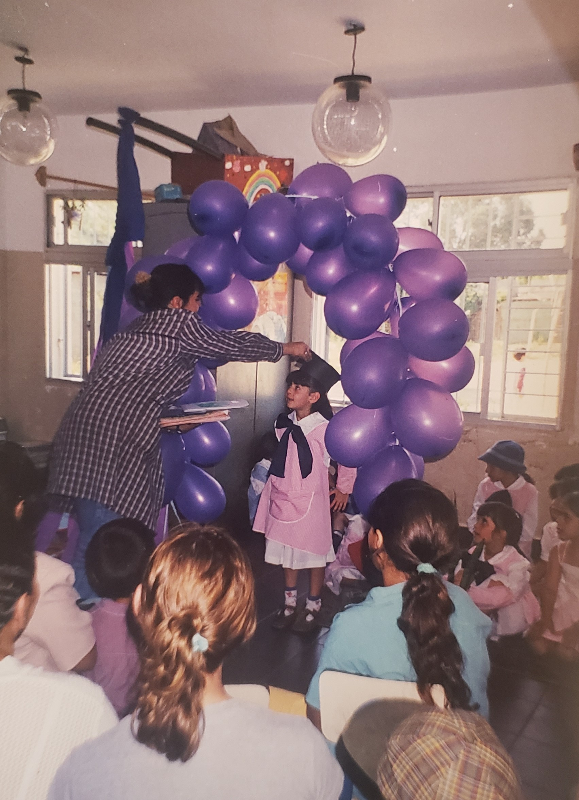

Visualize, focus and execute!
My name is Maria Ferdinan and I am a first-generation college student.
My parents and I migrated to the States from Uruguay when I was 8yrs of age to ensure a brighter future for me – and have been living here ever since.
My journey has been a bumpy ride. From learning English as my second language, to accustoming to a new culture, to helping my Mother in anything I could after my Father passed away from Lung Cancer when I was twelve years of age, to paying my way through of all my years of college working as a full-time waitress.
It has definitely not been easy, but my perseverance and strong will has always kept my mind focused in my goals and have shaped me into the strong woman I am today.
I started studying Business Administration sophomore year of high school until I received my Associates Degree at Essex County College, May 2017. After receiving my first degree, I realized I was never passionate about it and so I decided to change my major.
I wanted to be part of a field that would always challenge me, and what better field could I have chosen than the fast pacing, ever changing field of Information Technology?
Over the few years that I have attended NJIT, it definitely has challenged me, and I love it!
I have learned how to code in Python, Java, HTML, and CSS

I have learned how to enhance the client-side interface of a basic three-tier application,
I have learned how to create a simple game with Unity and Adobe applications,
I have learned how to perform tasks and techniques as a system administrator by creating virtual instances with vCloud,
I have learned a variety of skills that will certainly help enhance my current search for internships as well as my career path in the future.